Fotos del club
Actividades reales de CiTIAM Labs en Highpoint School. Haz clic para ver la foto grande y usa el botón Atrás del navegador para regresar.

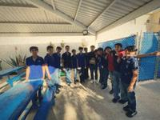

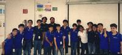

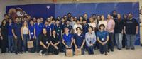

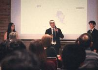

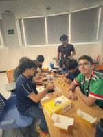

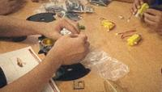

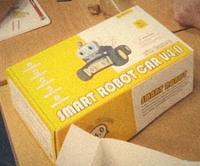

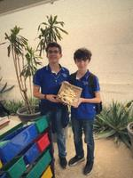

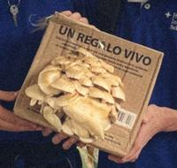

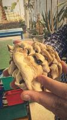

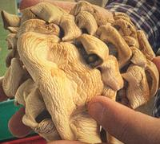

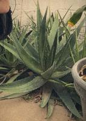

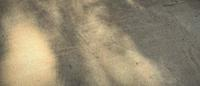
Fotos de consulta
Estas imágenes no son del club. Vienen de Wikimedia Commons y sus autores permiten reutilizarlas. Las usamos para ilustrar los temas; los créditos completos están más abajo.

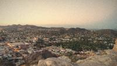

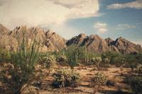


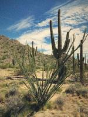

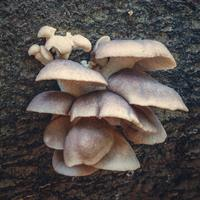

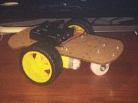

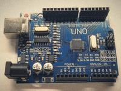

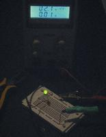

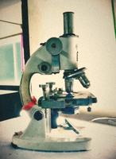

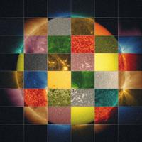

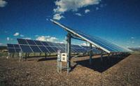

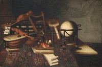

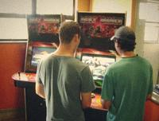

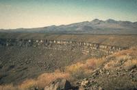

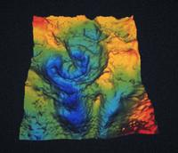

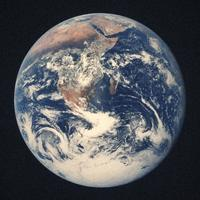

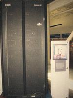

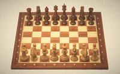
Museo de GIF
Toda la colección de animaciones, con el nombre de su archivo para que puedas reutilizarlas en el sitio. Fueron dibujadas para CiTIAM con pocos colores, como en los años noventa. Están en assets/gifs.
Animaciones para explicar


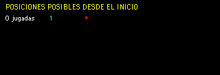


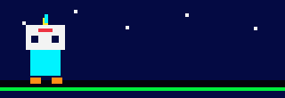
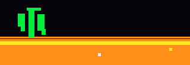
Iconos y adornos


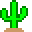


Piezas de ajedrez
Están en assets/gifs/ajedrez. El tablero las usa como imágenes de fondo.
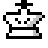
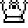
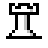
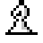
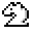
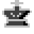
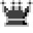
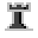
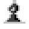
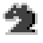
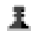
Botones de 88 x 31
En 1998, los sitios intercambiaban estos botoncitos para recomendarse. Siempre medían 88 x 31 pixeles.


Créditos y licencias
Usar una imagen de internet no es lo mismo que tener permiso. Cada foto de consulta tiene una licencia que dice qué se puede hacer con ella. Para este sitio redujimos su tamaño, les quitamos los metadatos y les aplicamos un filtro que imita una cámara de rollo de 1998, así que los colores y el grano no son los del original.
| Archivo | Autoría | Licencia |
|---|---|---|
| cerro-de-la-campana | Karla Espinoza Palafox | CC BY 2.0 |
| desierto-sonora | Tomas Castelazo | CC BY 3.0 |
| saguaro-atardecer | National Park Service | Dominio público |
| ocotillo-tras-lluvia | Bureau of Land Management, Arizona | Dominio público |
| hongo-ostra-silvestre | Achim Lammerts (Syntaxys) | CC BY-SA 4.0 |
| robot-seguidor-de-linea | Gsparr86 | CC BY-SA 4.0 |
| arduino-uno | JrawX | CC0 |
| protoboard-led | Rhetos | CC0 |
| microscopio | Aliva Sahoo | CC BY-SA 4.0 |
| sol-nasa | NASA Goddard Space Flight Center | Dominio público |
| paneles-solares | Dennis Schroeder, NREL | Dominio público |
| paleta-de-pintor | Bartolomeo Bettera | Dominio público |
| maquinas-arcade | Andrevruas | CC BY-SA 3.0 |
| pinacate | Richard Waitt, U.S. Geological Survey | Dominio público |
| chicxulub | NASA | Dominio público |
| tierra-apolo-17 | Harrison Schmitt, Apolo 17, NASA | Dominio público |
| deep-blue | Erik Pitti | CC BY 2.0 |
| piezas-de-ajedrez | Wilfredor | CC0 |
- Dominio público y CC0: se pueden usar libremente; aun así, damos crédito.
- CC BY: hay que mencionar a quien la creó.
- CC BY-SA: igual que CC BY y, si la modificas, tu versión debe compartirse con la misma licencia.
Las fotos del club son de CiTIAM Labs y no se ofrecen para reutilizarse. Los GIF fueron creados para este sitio.